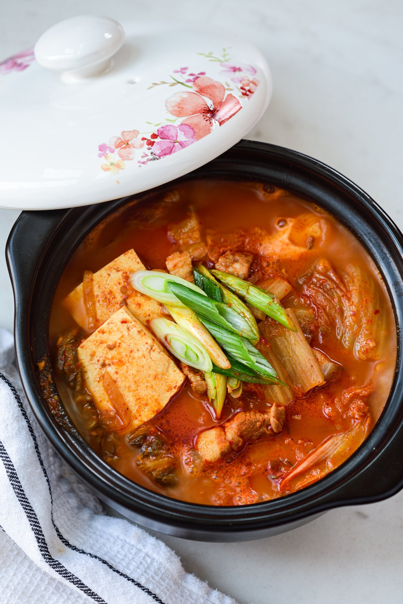

Kimchi Jjigae

Ingredients
- Kimchi
- Rice Water
- Pickled Shrimp
- Pork Belly
- Scallions
- Soy Sauce
- Minced Garlic
- (Optional) Korean Miso
- (Optional) Medium Firm Tofu
Recipe
- In medium heat, put 400g of bite sized pork belly into the pot with 500ml Rice Water, 1 TBSP of shrimp paste, and 1 TBSP of Korean Miso
- Once pork belly is boiling, put in bite sized kimchi
- Season with Soysauce, Pickled Shrimp and Kimchi Juice, add some Garlic
- If you are putting in Tofu, this is the time!
- Let the soup simmer for 1 hour
- Add chopped scallions for garnish before serving